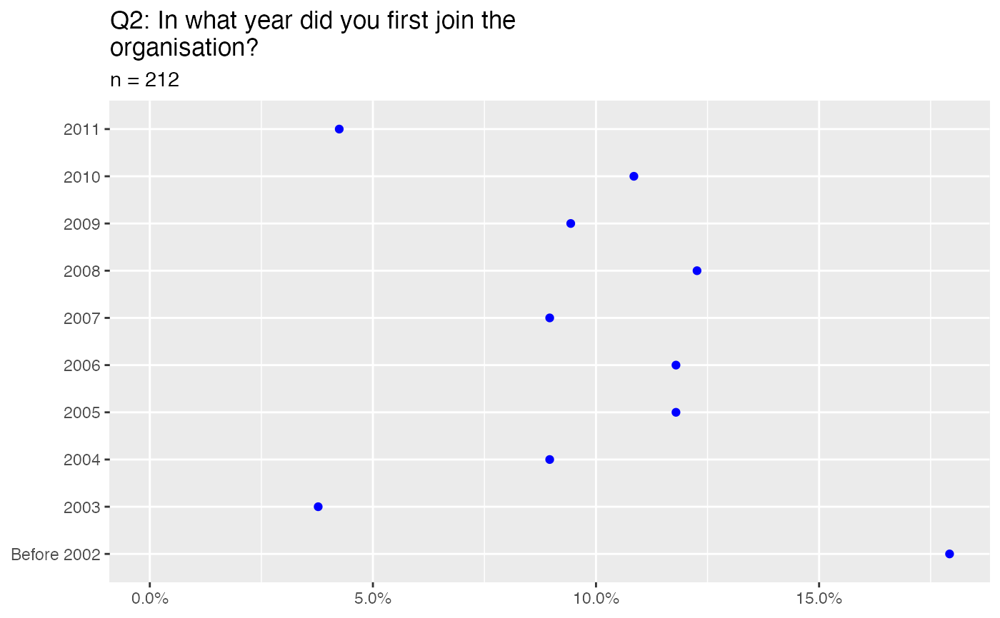
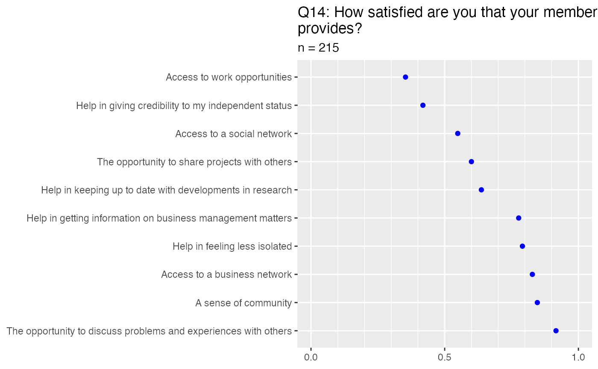

Plot data in yes/no format.
survey_plot_yes_no(data, q)surveydata object
Question
Other survey plotting functions:
survey_plot_question(),
survey_plot_satisfaction()
question_text(membersurvey)
#> $id
#> [1] "id"
#>
#> $Q1
#> [1] "[A market research professional] How many years of experience do you have as ?"
#> [2] "[An independent consultant / small business] How many years of experience do you have as ?"
#>
#> $Q2
#> [1] "In what year did you first join the organisation?"
#>
#> $Q3
#> [1] "[Carry out ad hoc qualitative projects] With regard to your market research work, which of these do you do at all?"
#> [2] "[Carry out ad hoc quantitative projects] With regard to your market research work, which of these do you do at all?"
#> [3] "[Design ad hoc projects but don't personally carry them out] With regard to your market research work, which of these do you do at all?"
#> [4] "[Design/advise on research programmes as a whole] With regard to your market research work, which of these do you do at all?"
#> [5] "[Provide project management] With regard to your market research work, which of these do you do at all?"
#> [6] "[Summarise previous research] With regard to your market research work, which of these do you do at all?"
#> [7] "[Carry out desk research] With regard to your market research work, which of these do you do at all?"
#> [8] "[Provide modelling/ statistical services] With regard to your market research work, which of these do you do at all?"
#> [9] "[Provide consultancy on other specific aspects of research] With regard to your market research work, which of these do you do at all?"
#> [10] "[Provide field services] With regard to your market research work, which of these do you do at all?"
#> [11] "[Provide data processing services] With regard to your market research work, which of these do you do at all?"
#> [12] "[Provide other part project services (interviewing, moderating, report writing)] With regard to your market research work, which of these do you do at all?"
#> [13] "[Lecture/teach] With regard to your market research work, which of these do you do at all?"
#> [14] "[Provide training services] With regard to your market research work, which of these do you do at all?"
#> [15] "[Interim management] With regard to your market research work, which of these do you do at all?"
#>
#> $Q4
#> [1] "And which of these do you consider your main activity?"
#>
#> $Q5
#> [1] "Have you done any international research related work in the past 12 months?"
#>
#> $Q6
#> [1] "[United Kingdom] Which regions were covered by that research?"
#> [2] "[Republic of Ireland] Which regions were covered by that research?"
#> [3] "[Other Western Europe] Which regions were covered by that research?"
#> [4] "[Eastern Europe] Which regions were covered by that research?"
#> [5] "[USA/Canada] Which regions were covered by that research?"
#> [6] "[Central or South America] Which regions were covered by that research?"
#> [7] "[Asia / Far East] Which regions were covered by that research?"
#> [8] "[Australia/New Zealand] Which regions were covered by that research?"
#> [9] "[Middle East] Which regions were covered by that research?"
#> [10] "[Africa] Which regions were covered by that research?"
#>
#> $Q7
#> [1] "In the last 12 months, what proportion of your work was from new clients?"
#>
#> $Q8
#> [1] "Do you or your company have your own website?"
#>
#> $Q9
#> [1] "[Twitter] Which of the following social media do you use for business purposes?"
#> [2] "[LinkedIn] Which of the following social media do you use for business purposes?"
#> [3] "[Facebook] Which of the following social media do you use for business purposes?"
#> [4] "[Plaxo] Which of the following social media do you use for business purposes?"
#> [5] "[Posterous] Which of the following social media do you use for business purposes?"
#>
#> $Q10
#> [1] "Are you registered (obtained notification) under the Data Protection Act 1998?"
#>
#> $Q11
#> [1] "[Professional indemnity] Which of the following insurances do you have in respect of your research business?"
#> [2] "[Public / general liability] Which of the following insurances do you have in respect of your research business?"
#> [3] "[Professional expenses for tax investigations (VAT, PAYE etc)] Which of the following insurances do you have in respect of your research business?"
#> [4] "[Employers liability] Which of the following insurances do you have in respect of your research business?"
#> [5] "[None of these] Which of the following insurances do you have in respect of your research business?"
#>
#> $Q11_other
#> [1] "[Other] Which of the following insurances do you have in respect of your research business?"
#>
#> $Q12
#> [1] "[Overall] How satisfied are you with your membership of the organisation overall?"
#>
#> $Q13
#> [1] "[ website] And how satisfied are you with these specific aspects of your membership?"
#> [2] "[eGroup email forum] And how satisfied are you with these specific aspects of your membership?"
#> [3] "[The Indie PDF newsletter] And how satisfied are you with these specific aspects of your membership?"
#> [4] "[ events] And how satisfied are you with these specific aspects of your membership?"
#>
#> $Q14
#> [1] "[Help in keeping up to date with developments in research] How satisfied are you that your membership provides?"
#> [2] "[Help in getting information on business management matters] How satisfied are you that your membership provides?"
#> [3] "[The opportunity to share projects with others] How satisfied are you that your membership provides?"
#> [4] "[Access to work opportunities] How satisfied are you that your membership provides?"
#> [5] "[The opportunity to discuss problems and experiences with others] How satisfied are you that your membership provides?"
#> [6] "[Help in feeling less isolated] How satisfied are you that your membership provides?"
#> [7] "[Help in giving credibility to my independent status] How satisfied are you that your membership provides?"
#> [8] "[A sense of community] How satisfied are you that your membership provides?"
#> [9] "[Access to a business network] How satisfied are you that your membership provides?"
#> [10] "[Access to a social network] How satisfied are you that your membership provides?"
#>
#> $Q15
#> [1] "[Rank 1] Which of the following membership aims are most important to you?"
#> [2] "[Rank 2] Which of the following membership aims are most important to you?"
#> [3] "[Rank 3] Which of the following membership aims are most important to you?"
#> [4] "[Rank 4] Which of the following membership aims are most important to you?"
#> [5] "[Rank 5] Which of the following membership aims are most important to you?"
#> [6] "[Rank 6] Which of the following membership aims are most important to you?"
#>
#> $Q19
#> [1] "[Used the organisation logo in promoting your business] How often have you used each of the following services / benefits during the last 12 months?"
#> [2] "[Attended events in London] How often have you used each of the following services / benefits during the last 12 months?"
#> [3] "[Attended other local events] How often have you used each of the following services / benefits during the last 12 months?"
#> [4] "[Read the Indie] How often have you used each of the following services / benefits during the last 12 months?"
#> [5] "[Visited the organisation website] How often have you used each of the following services / benefits during the last 12 months?"
#> [6] "[Looked at the Supplier Directory on the organisation website] How often have you used each of the following services / benefits during the last 12 months?"
#>
#> $Q20
#> [1] "[The subjects of the talks didn't interest me / were not relevant to me] You said you did not attend any events in the last 12 months. Why not?"
#> [2] "[I am not really interested in attending events] You said you did not attend any events in the last 12 months. Why not?"
#> [3] "[I am only really interested in the social / networking side of the organisation] You said you did not attend any events in the last 12 months. Why not?"
#> [4] "[The locations weren't convenient for me] You said you did not attend any events in the last 12 months. Why not?"
#> [5] "[I don't like going to London / Manchester etc] You said you did not attend any events in the last 12 months. Why not?"
#> [6] "[It's too expensive to go to London / Manchester etc for an meeting] You said you did not attend any events in the last 12 months. Why not?"
#> [7] "[The talks / events were too expensive] You said you did not attend any events in the last 12 months. Why not?"
#> [8] "[I was too busy] You said you did not attend any events in the last 12 months. Why not?"
#> [9] "[I was not in the country at the time] You said you did not attend any events in the last 12 months. Why not?"
#> [10] "[I only recently joined the organisation] You said you did not attend any events in the last 12 months. Why not?"
#>
#> $Q20_other
#> [1] "[Other] You said you did not attend any events in the last 12 months. Why not?"
#>
#> $Q21
#> [1] "[Webinars i.e. you can listen via phone link and see charts on line] How interested are you to attend / be involved in each of the following event types?"
#> [2] "[Local networking events] How interested are you to attend / be involved in each of the following event types?"
#> [3] "[Central London talks including networking ] How interested are you to attend / be involved in each of the following event types?"
#> [4] "[Summer party in London venue] How interested are you to attend / be involved in each of the following event types?"
#> [5] "[Christmas party in London venue] How interested are you to attend / be involved in each of the following event types?"
#> [6] "[Events where members present their companies to other members] How interested are you to attend / be involved in each of the following event types?"
#>
#> $Q23
#> [1] "[Market research Society (MRS)] Are you a member of..."
#> [2] "[Association of Qualitative Researchers (AQR)] Are you a member of..."
#> [3] "[Business Interest Group (BIG)] Are you a member of..."
#> [4] "[ESOMAR] Are you a member of..."
#> [5] "[None of the above] Are you a member of..."
#>
#> $Q23_other
#> [1] "[Other] Are you a member of..."
#>
#> $Q24
#> [1] "What was your gross annual turnover for your last full financial year?"
#>
#> $Q25
#> [1] "What was your gross annual profit for your last full financial year?"
#>
#> $Q26
#> [1] "[Number of clients|0|50] How many individual clients did you work for during 2010?"
#>
#> $Q27
#> [1] "[External Clients] What is your average daily charge out rate (excluding VAT), used for most of your external clients and for agency/other consultant clients?"
#> [2] "[Agency/Consultancy Clients] What is your average daily charge out rate (excluding VAT), used for most of your external clients and for agency/other consultant clients?"
#>
#> $Q30
#> [1] "What is your main business activity?"
#>
#> $Q30_other
#> [1] "[Other] What is your main business activity?"
#>
#> $Q31
#> [1] "What is the legal format of your business?"
#>
#> $Q31_other
#> [1] "[Other] What is the legal format of your business?"
#>
#> $Q32
#> [1] "Thinking of your paid work, which of these best describes your average working week?"
#>
#> $Q33
#> [1] "Where are you based?"
#>
#> $Q35
#> [1] "Are you male or female?"
#>
#> $weight
#> [1] "weight"
#>
#> $size
#> [1] "Number of respondents"
#>
survey_plot_question(membersurvey, "Q2")

survey_plot_yes_no(membersurvey, "Q2")
survey_plot_satisfaction(membersurvey, "Q14")
